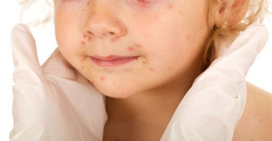
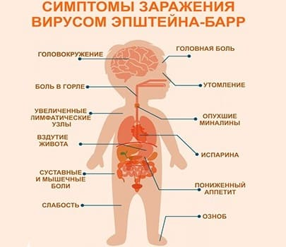

Это заболевание вызывается вирусом Эпштейна — Барра и известно как «болезнь поцелуев», поскольку он, как правило, передается через слюну среди близких друзей или членов семьи. Вот что вам нужно знать, если у вашего ребенка или у возлюбленной (возлюбленного) вашего подростка мононуклеоз.
СИМПТОМЫ
Острая фаза заболевания. У детей часто не бывает никаких подозрительных симптомов, кроме легкой лихорадки, недомогания, боли в горле. Дети старшего возраста и подростки обычно чувствуют себя хуже. Мононуклеоз в этой возрастной группе имеет более яркую клиническую картину:
• увеличенные лимфатические узлы на шее;
• увеличенные, красные миндалины, покрытые белым налетом;
• лихорадка (может длиться 10—14 дней);
• сыпь;
• усталость, плохой аппетит;
• врач может обнаружить увеличение печени и селезенки, увеличение лимфатических узлов разных групп, например, в подмышках и в паховой области;
• может быть желтуха из-за поражения печени.
Опасность для окружающих. Человек представляет опасность для окружающих с момента появления первых симптомов и до тех пор, пока держится лихорадка. В течение этого периода он может распространять вирус через кашель или чихание. Когда ребенок почувствует себя лучше, вирус еще в течение нескольких месяцев может содержаться в его слюне. Однако передача мононуклеоза таким путем не очень распространена, так как для этого нужен повторяющийся тесный контакт. Обычный ежедневный контакт со сверстниками или членами семьи не представляет риска. Инкубационный период длится от 1 до 2 месяцев.

ДИАГНОСТИКА
Если симптомы кажутся врачу очевидными, он может и не направлять вас на анализы для подтверждения диагноза. Тем не менее, если ребенок болен, можно сделать анализы крови, чтобы подтвердить диагноз и исключить другие заболевания. Мгновенный анализ крови — самый быстрый и дешевый способ. Может быть сделан более точный, более дорогой и медленный анализ крови (занимает несколько дней), называемый «панель антител к вирусу Эпштейна-Барра». Подсчет количества клеток крови может показать высокий уровень атипичных лимфоцитов (разновидность белых клеток крови), которые характерны для мононуклеоза.
КОГДА БЕСПОКОИТЬСЯ И ЧТО ДЕЛАТЬ
Большинство детей справляются с этим заболеванием без каких-либо проблем.
ЛЕЧЕНИЕ
Не существует специфического лечения от вируса Эпштейна — Барра. Лечение нацелено на устранение любых доставляющих дискомфорт симптомов, таких как лихорадка и ангина.
РАЗРЫВ СЕЛЕЗЕНКИ И ЗАНЯТИЯ СПОРТОМ
Если врач выявил увеличение печени и селезенки, ребенок не должен заниматься контактными видами спорта, пока размеры органов не вернутся к норме (это занимает примерно 1 месяц), из-за опасности разрыва селезенки, если ребенка сильно ударят в живот (опасная для жизни ситуация, требующая немедленно хирургического вмешательства). Даже если врач не обнаружит проблем с селезенкой при первичном осмотре (он может не заметить их), в любом случае будет разумно избегать контактных видов спорта в течение 1 месяца.
ХРОНИЧЕСКАЯ УСТАЛОСТЬ До 10% подростков и взрослых, страдающих мононуклеозом, пройдя острую фазу заболевания, неделями или месяцами будут испытывать усталость. Неясно, вызвано ли это вирусом Эпштейна — Барра, или нет, поскольку усталость может появляться и после других заболеваний. Если острая фаза протекала довольно мягко, вы можете даже и не заметить, что это был мононуклеоз, пока не наступит фаза хронической усталости и вы не обратитесь к врачу. |
УВЕЛИЧЕНИЕ МИНДАЛИН И ЗАТРУДНЕННОЕ ДЫХАНИЕ
У некоторых детей сильный храп и нарушения дыхания ночью могут быть из-за увеличения миндалин. В таких случаях возможно применение пероральных стероидов примерно в течение недели для уменьшения миндалин. Обратитесь к врачу, если дыхание ребенка вызывает у вас беспокойство.

ЖЕЛТУХА
Примерно в 10% случаев мононуклеоза вирус может поражать печень, вызывая желтуху. Эта проблема пройдет без применения лечения, а ваш врач может следить за состоянием печени, периодически делая анализы крови.
СЫПЬ ПРИ ПРИЕМЕ АНТИБИОТИКОВ
У детей с мононуклеозом, которые принимают антибиотики амоксициллин или аугментин из-за подозрений на бактериальное воспаление миндалин, появляется сыпь, похожая на аллергическую, из-за особой реакции между вирусом Эпштейна — Барра, антибиотиком и иммунной системой. На самом деле это не аллергическая реакция на антибиотики, хотя именно такой диагноз зачастую ошибочно ставят вместо мононуклеоза.
СОВЕТ ДОКТОРОВ СИРС: НЕ ПЕРЕДАВАЙТЕ ЕГО ДАЛЬШЕ Если у вашего подростка мононуклеоз, необходимо объяснить ему, что нельзя делиться напитками с другими. Отложите отдельно тарелки, чашки и посуду, предназначенную для использования ТОЛЬКО человеком, болеющим мононуклеозом. Тщательно мойте их после каждого использования. Это поможет снизить риск передачи мононуклеоза кому-нибудь другому. |
Здоровье ребенка от докторов Сирс / Сирс У. и др.